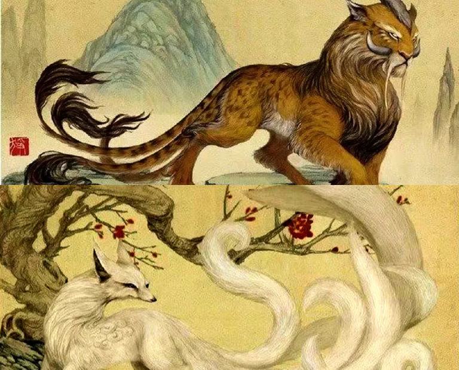

MenuOther versions of current website |
What is "Classic of Mountains and Seas" |
|
Classic of Mountains and SeasThe Classic of Mountains and Seas (《山海经》, *Shan Hai Jing*) is an ancient Chinese text that dates back to the early 4th century BCE to early 1st century BCE. It is a fascinating compilation of geography, mythology, and folklore. Key Aspects:
Overall, the "Classic of Mountains and Seas" is a rich tapestry of ancient Chinese thought, blending geography, mythology, and cultural lore. Its influence can be seen in later Chinese literature, art, and popular culture. |
Page content |
|
Explore the menu to see mythological creatures or press on the picture |
||